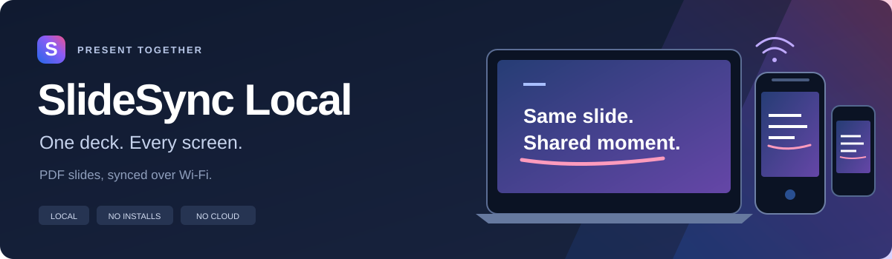
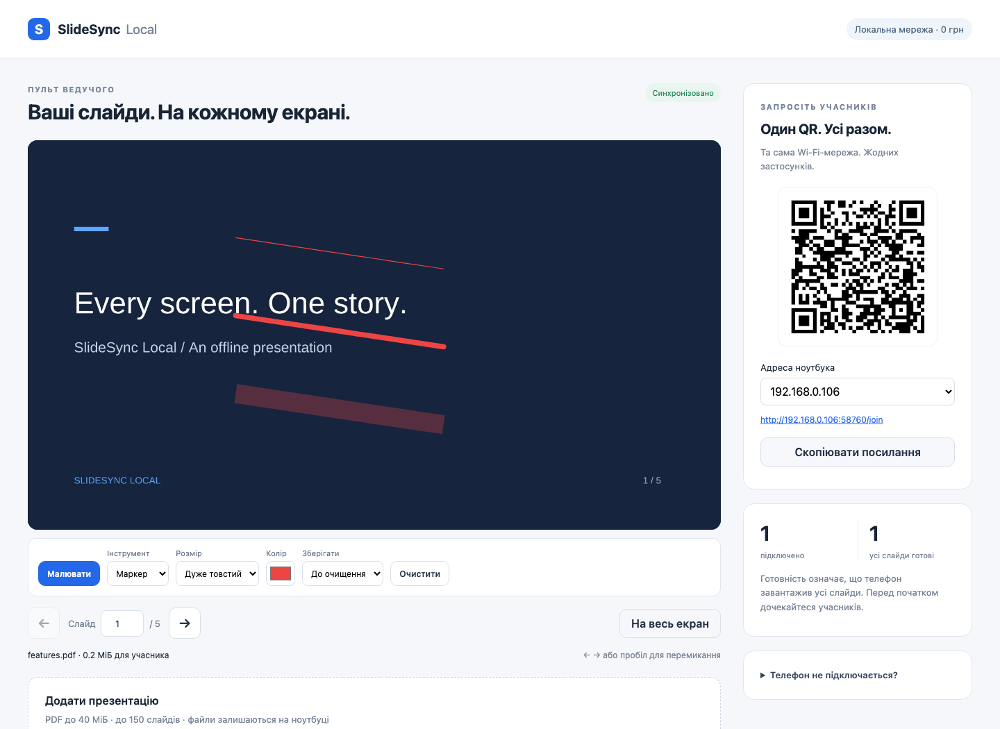
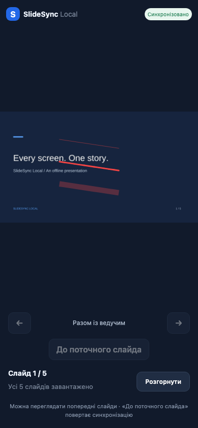

Your laptop. Your Wi-Fi. Your slides.
One deck.
Every screen.
Sync PDF slides to phone browsers over Wi-Fi.
No installs on phones. No cloud. Just open and follow along.
Free · Local network · iPhone & Android browsers

From laptop to front row
Three steps. One shared slide.
Connect the laptop and phones to a trusted Wi-Fi network that allows devices to reach each other.
-
Run on your laptop
Start the local server and open the presenter link printed in your terminal.
-
Upload a PDF
Your laptop renders the pages. Phones preload the slides before you begin.
-
Scan the QR on phones
Participants open the link in Safari or Chrome. Change slides; their screens follow.
Two views. Same presentation.
You lead. They follow.
Draw attention to a detail, or let someone revisit a slide without interrupting the room.


Real app screenshots from a completed demo session. The interface is currently in Ukrainian. Scan the QR in your running app, not these screenshots.
What you get
Pros
No phone app installs
Participants join through their iPhone or Android browser.
Offline on your LAN
After initial setup, presentations need no internet connection or cloud service.
Live sync that reconnects
WebSocket slide updates, automatic reconnect, and an HTTP fallback.
Shared ink with smooth fading
Pencil, brush, and marker strokes appear on participants’ screens. Temporary strokes fade within five seconds; persistent ink stays until cleared. Slide changes clear all ink.
Room to look back
Phones can browse earlier slides, then jump back to the presenter’s current slide.
PDFs rendered on the laptop
Pages become images locally and preload on phones. No cloud conversion.
Read before presenting
Cons / limitations
LAN only
Phones must reach the laptop. Guest or public Wi-Fi client isolation can block this, even on the same Wi-Fi name.
Unencrypted HTTP / WS
Traffic is not encrypted. Use a trusted network. Do not expose the server to the internet or forward its port.
The laptop stays on
Keep it awake, connected to the network, and running the server throughout the presentation.
Node.js 22.13+ required
The laptop needs Node.js and a one-time dependency install. That initial download needs internet access.
PDF only, with hard limits
Maximum 40 MiB and 150 pages. No password-protected PDFs. No PPTX playback, animations, or slide transitions.
Keep it local
Ready for your
next presentation?
Install Node.js 22.13+ on your laptop, then run these commands in a terminal.
Install dependencies once with internet access. After that, the presentation runs offline on your LAN.
git clone https://github.com/freemlolz/SlideShare.git
cd SlideShare
npm ci
npm startOpen the full presenter URL printed in the terminal, including its #token=… fragment. Upload your PDF, scan the QR on phones, and wait for slides to preload before presenting.